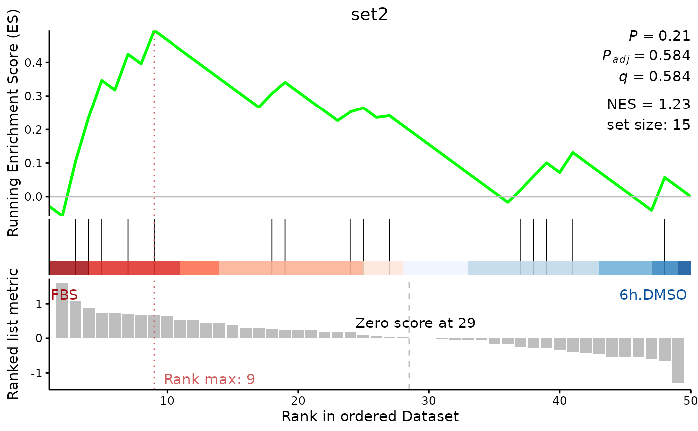

Function to plot GSEA results (see clusterprofiler).
# S3 method for class 'GSEA'
plot(
gsea.results,
geneset.id = NULL,
enrichment.geom = "line",
enrichment.color = "green",
enrichment.geom.size = 1,
enrichment.plot.zero.line = TRUE,
enrichment.zero.line.color = "gray",
enrichment.zero.line.width = 0.5,
enrichment.annotations.vjust.offset = 0,
geneset.segments.width = 0.3,
geneset.segments.color = "black",
add.condition.labels = TRUE,
condition.label.positive = NULL,
condition.label.negative = NULL,
rank.max.color = "indianred",
ranking.color = "gray",
gradient.colors = c("Reds", "Blues"),
title.position = "center",
title = NA,
image.file.name = NULL,
image.width = 7,
image.height = 5,
return.all.objects = FALSE
)Object of class DEprot.enrichResult, generated using geneset.enrichment, or gseaResult, generate by clusterprofiler.
Numeric value or a string identifying the Nth geneSet (numeric) or a specific id (string) if geneSet in the result table. Default value: NULL, which returns the ordered list of available geneSets.
String indicating the type of graph to use to plot the enrichment scores. Possible options: 'line', 'lines', 'dot', 'dots', 'point', 'points' (case insensitive). Default: 'line'.
String indicating any R-supported color to be used for the enrichment score plot. Default: 'green'.
Numeric value indicating the size of the line, or dots, used in the enrichment score plot. Default: 1.
Logical value to indicated whether to plot an horizontal line at 0 in the enrichment score plot. Default: TRUE.
String indicating any R-supported color to be used for the 0-line in the enrichment score plot (active when enrichment.plot.zero.line = TRUE). Default: 'gray'.
Numeric value indicating the line width of the 0-line in the enrichment score plot (active when enrichment.plot.zero.line = TRUE). Default: 0.5.
Numeric value to add to the vjust (vertical positioning) of the enrichment plot annotations (P, Padj, q, NES, set size). Positive values will shift-down the annotations. Default: 0 (base line).
Numeric value indicating the line width of the geneSet vertical segments. Default: 0.3.
String indicating any R-supported color to be used for the geneSet segments. Default: 'black'.
Logic value indicating whether the labels of the conditions compared should be plotted. Ignored if the object is not of class DEprot.enrichResult. Default: TRUE.
String indicating the label to use for the condition showing a positive ranking score (left side of the plot). Ignored if add.condition.labels = FALSE. Default: NULL, none or automatic.
String indicating the label to use for the condition showing a negative ranking score (right side of the plot). Ignored if add.condition.labels = FALSE. Default: NULL, none or automatic.
String indicating any R-supported color to be used for the max rank dotted lines and annotation. Default: 'indianred'.
String indicating any R-supported color to be used for the ranked list plot (histogram). Default: 'gray'.
Two-values string vector indicating the shadows of palettes to use for the geneset gradient. Possible values: 'Blues', 'Greens', 'Greys', 'Oranges', 'Purples', 'Reds'. Default: c('Reds', 'Blues').
String indicating the position of the title: 'left', 'center', 'right'. Default: 'center'.
String indicating the title to use. Default: NA, this will automatically use the geneset name chosen. Use NULL to do not plot the title.
String indicating the full path for the export of a pdf file of the combined plot. Default: NULL, no plot will be exported.
Numeric value to indicate the width (in inches) to use for the exported pdf file. Active only when image.file.name is not NULL. Default: 7.
Numeric value to indicate the height (in inches) t use for the exported pdf file. Active only when image.file.name is not NULL. Default: 5.
Logical value to indicate whether the function should return only the combined plot (ggplot object), or all the different panels and the combined plot in a list. Default: FALSE (only combined plot).
Either a ggplot-object with the final combined plot, or a list with the three panels separated and the combined plot: list(enrichment.panel, geneset.panel, rank.panel, combined.plot).
The internal function gsInfo is derived from the package enrichplot::gsInfo.
plot.GSEA(gsea.results = DEprot::test.toolbox$gsea.results, geneset.id = 1)
#> Warning: In `margin()`, the argument `t` should have length 1, not length 4.
#> ℹ Argument get(s) truncated to length 1.
#> Warning: In `margin()`, the argument `t` should have length 1, not length 4.
#> ℹ Argument get(s) truncated to length 1.
#> Warning: In `margin()`, the argument `t` should have length 1, not length 4.
#> ℹ Argument get(s) truncated to length 1.
#> Warning: In `margin()`, the argument `t` should have length 1, not length 4.
#> ℹ Argument get(s) truncated to length 1.
#> Warning: Removed 2 rows containing missing values or values outside the scale range
#> (`geom_bar()`).
